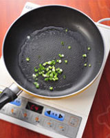
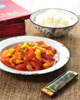

西红柿炒鸡蛋
这道菜，俺从小吃到大，它承载着我小时候的全部味觉记忆，啥也不说了，吃吧 同志们！
美食网提供的各项服务的所有权和运作权均归美食网所有，点击查看免责声明
材料
- 中型西红柿2个
- 鸡蛋2个
- 料酒一茶勺（5ml）
- 清水一汤勺（15ml）
- 青葱2根
- 白糖 2茶勺（10g）
- 番茄沙司2汤勺（3克）
- 盐1茶勺（3克）
制作步骤
- 将鸡蛋打散，放料酒和清水，继续搅勺。锅烧热，倒入油大火加热，待油8成热时，放入鸡蛋，并用铲子迅速搅散，盛储备用。
- 用叉子插住西红柿的底部，放在火上烤10秒钟，待表皮裂开后，撕去西红柿的皮，将西红柿切块，青葱洗净切碎。
- 锅中倒入油大火加热，带油7成热时，随后倒入西红柿块，煸炒2分钟，待西红柿出汤后，放入白糖和番茄沙司，最后放入超好的鸡蛋搅匀，出锅前放入盐即可。
美食图片


- 


- 